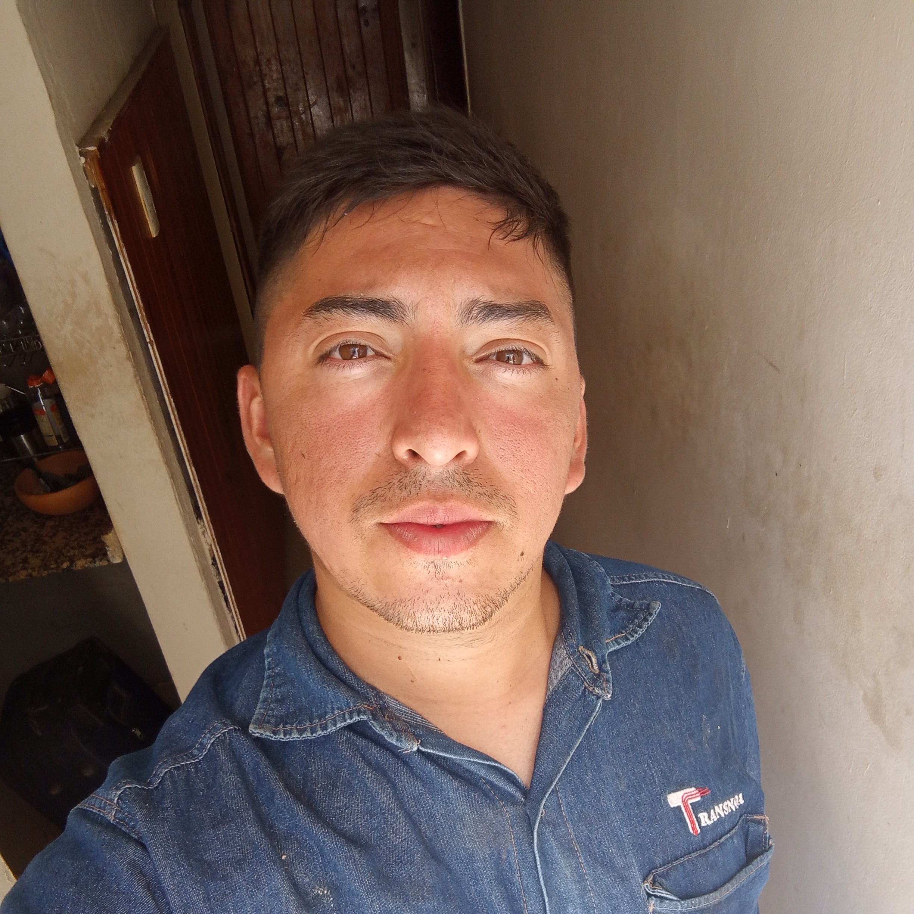

Conócenos
↓
Nuestra historia
Somos un grupo de trabajo comprometido con la difusión de la identidad, la historia y la riqueza natural de la provincia de Tucumán. A través de este blog buscaremos acercar a la comunidad, y a los visitantes, información sobre su patrimonio actual, paisajes, tradiciones y sitios emblemáticos, combinando investigación, comunicación digital y una mirada local que valore nuestras raíces.
Nuestro Equipo

Luis Reartez
31 años

Josefina Gambarte Flores
13 años

Esteban Alvarez
28 años

Gabriel Maximiliano Toledo Pimentel
33 años